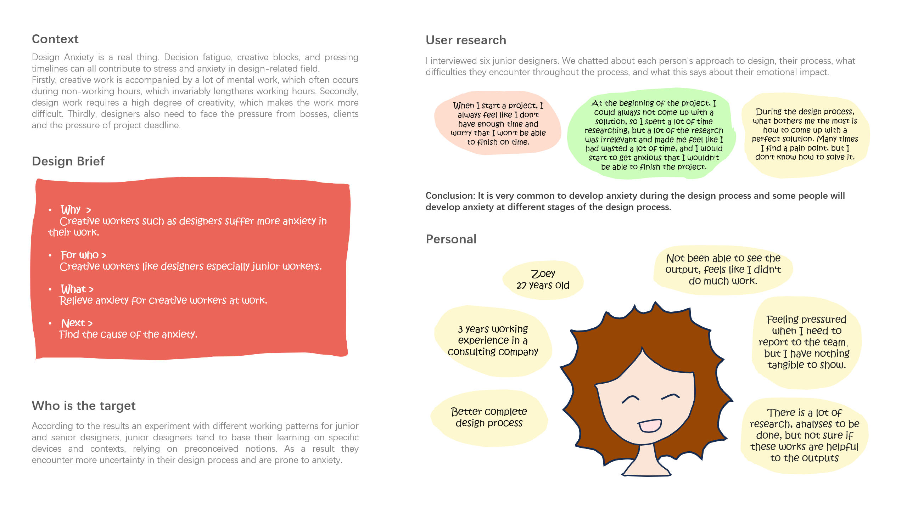
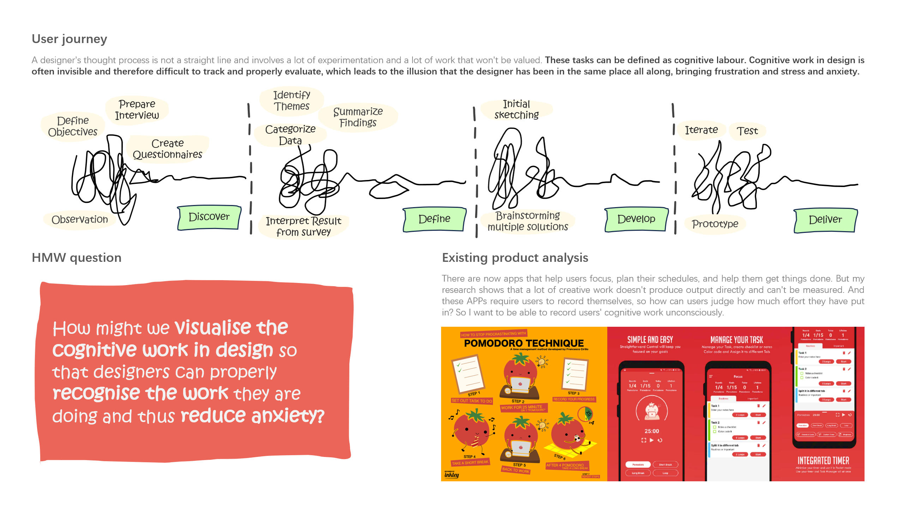
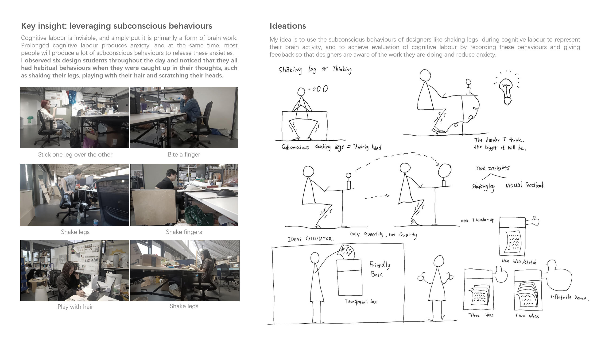
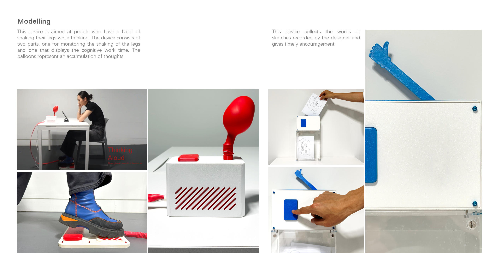

Work · Graduation
Thinking Aloud
How might we visualise the cognitive work in design, so designers can properly recognise the work they are doing and thus reduce anxiety?
upload →images/thinking-4.jpg

upload →images/thinking-5.jpg

upload →images/thinking-6.jpg

upload →images/thinking-7.jpg

ResearchCognitive workRCA